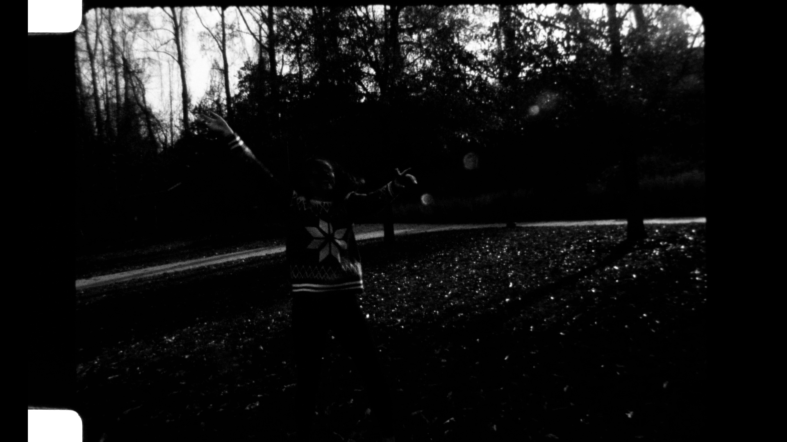
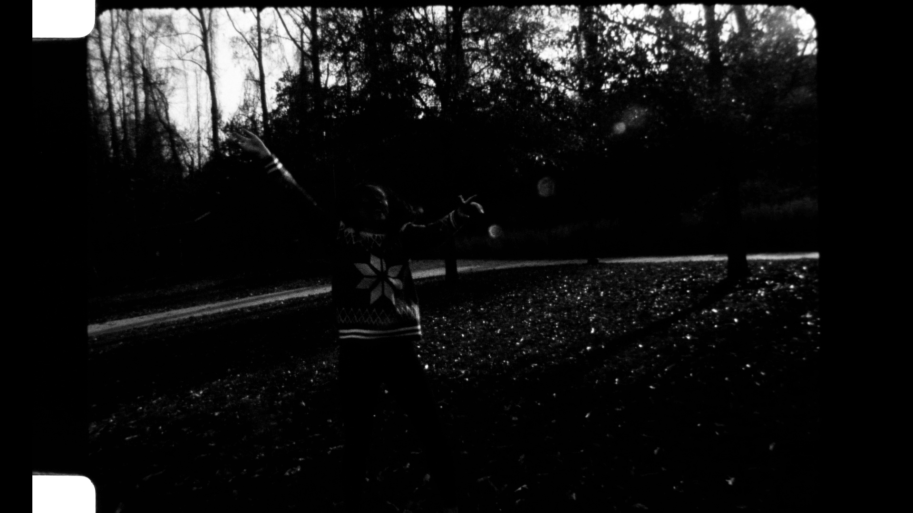
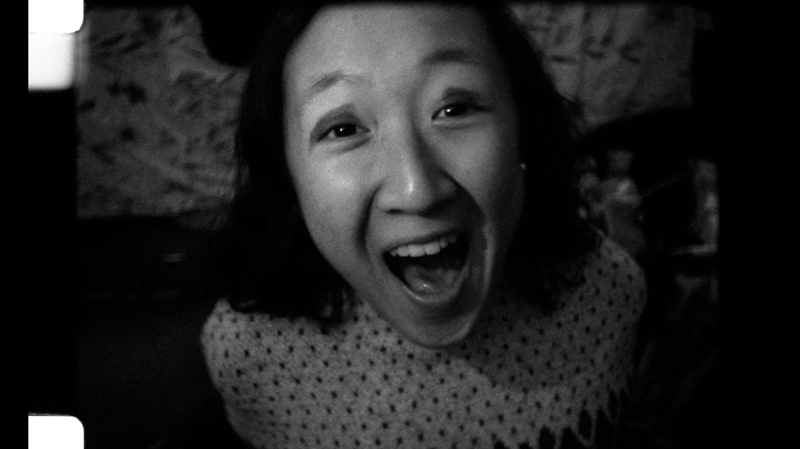
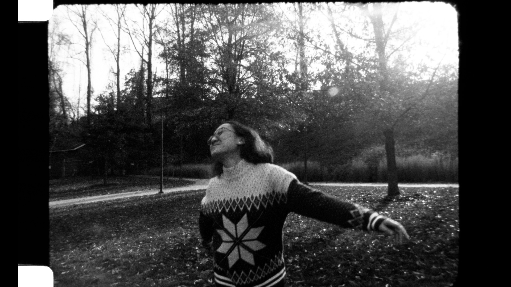
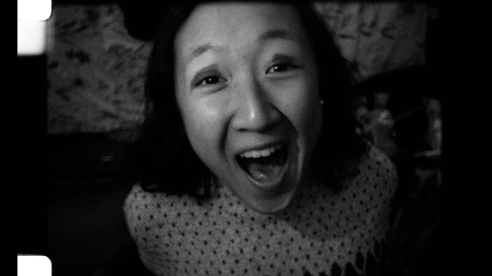
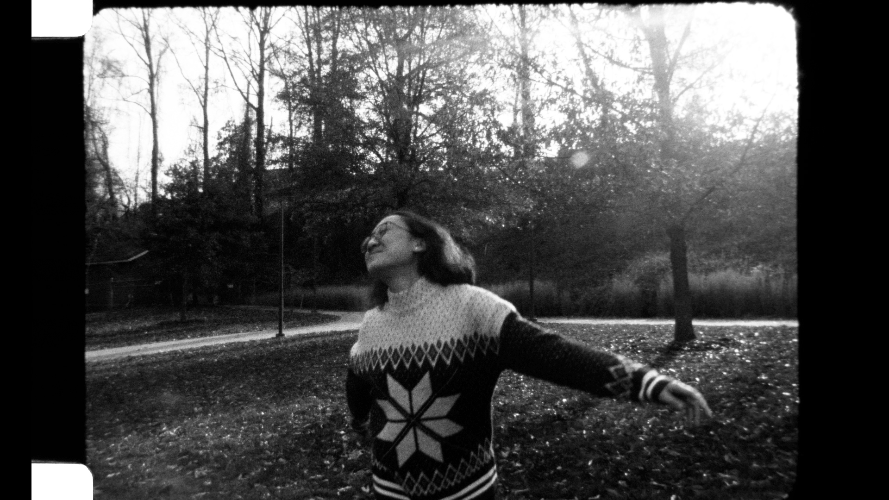
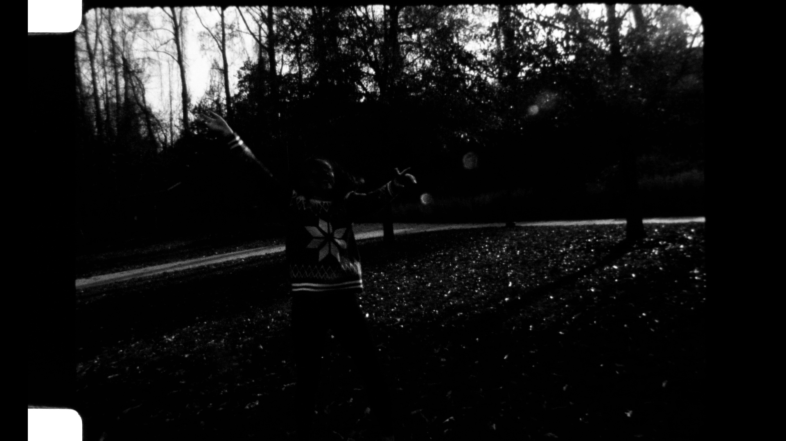
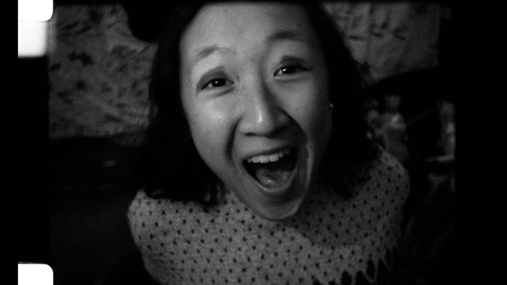
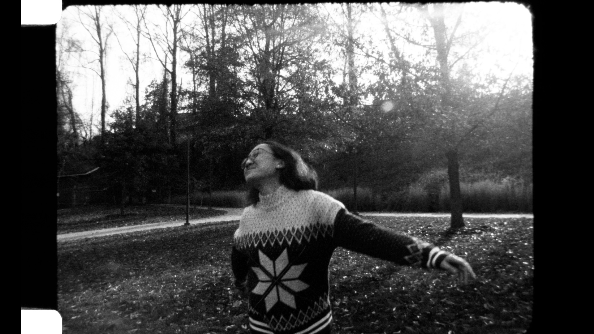

1:11 film
16mm B&W Reversal Film
Learning how to shoot on film in my first semester, cut by hand. Explores light and motion.
 

 

Learning how to shoot on film in my first semester, cut by hand. Explores light and motion.
